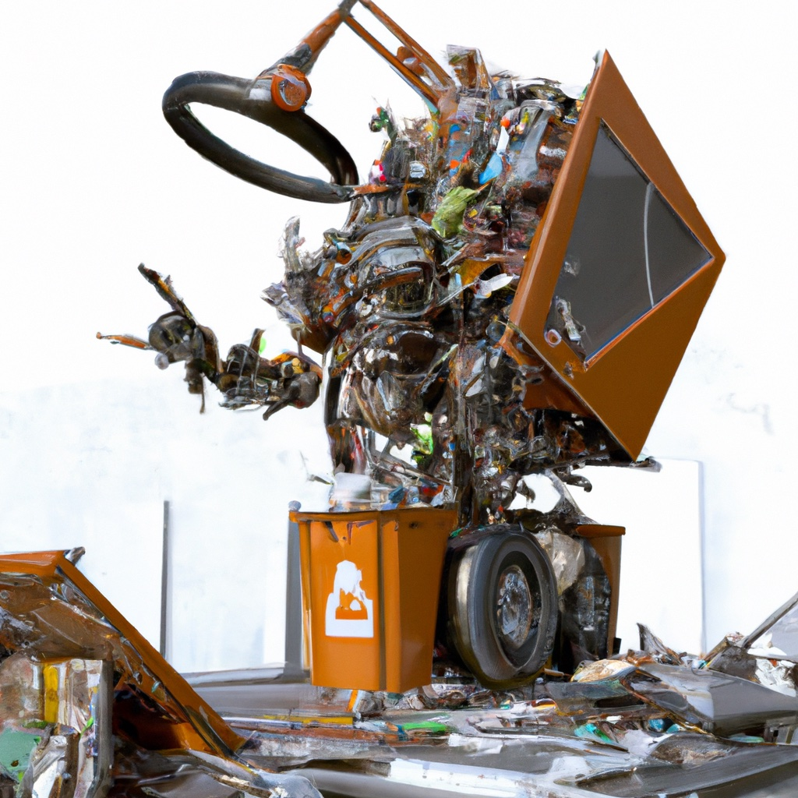

2.6. Learning#

We can learn prior and sensor models from data we collect.
{kind=link}
At various times in this chapter we seemed to pull information out of thin air. But the various probabilistic models we used can be learned from data. In Section 2.1 we talked about priors over state. Here we will estimate prior from counts, and introduce the idea of adding “bogus counts” in the case that we do not have a lot of data. Also, in section 2.3 we discussed sensor models, and here we estimate those sensor models from counts recorded for each of the possible states. Finally, while counting works for discrete sensors, for continuous sensors we have to do a bit more work. We will end this section by showing how to fit simple Gaussian sensor models to data.
2.6.1. Estimating a Discrete PMF#
Count the occurrences for each category.
In section 2.1 we introduced the notion of a probability mass function (PMF) to characterize the a priori probability of being in a certain state. It turns out that the normalized counts we obtain when observing states over a long time period provide a good approximation for the PMF. The more samples that go in, the better the approximation.
As an example, let us assume that, at a different trash sorting cell, we observe for a while and note the category for each piece of trash, recording as we go. We might see something like:
data = [1, 1, 1, 2, 1, 1, 1, 3, 0, 0, 0, 1,
2, 2, 2, 2, 4, 4, 4, 1, 1, 2, 1, 2, 1]
Using numpy we can get the counts using the bincount function. We then plot the counts using plotly.express, in Figure 1.
#| caption: Counts of each category in the data.
#| label: fig:counts_of_categories
counts = np.bincount(data)
px.bar(x=categories, y=counts)
We can then estimate the probability of each category \(c_k\) simply by dividing the count \(N_k\) by the number of data points \(N\):
In our example:
estimated_pmf = counts/sum(counts)
print(f"Counts: {counts}\nEstimated PMF: {estimated_pmf}")
Counts: [ 3 11 7 1 3]
Estimated PMF: [0.12 0.44 0.28 0.04 0.12]
We can now easily turn this into a GTSAM discrete prior for pretty-printing:
prior = gtsam.DiscreteDistribution(Category, estimated_pmf)
pretty(prior, variables)
P(Category):
| Category | value |
|---|---|
| cardboard | 0.12 |
| paper | 0.44 |
| can | 0.28 |
| scrap metal | 0.04 |
| bottle | 0.12 |
Note that the counts are the only quantities one needs to estimate a PMF: a statistician would say that the counts are a sufficient statistic for the purpose of estimating the probability distribution. In fact, GTSAM can just take the counts themselves, as it normalizes internally:
prior = gtsam.DiscreteDistribution(Category, "3/11/7/1/3")
pretty(prior, variables)
P(Category):
| Category | value |
|---|---|
| cardboard | 0.12 |
| paper | 0.44 |
| can | 0.28 |
| scrap metal | 0.04 |
| bottle | 0.12 |
2.6.1.1. Smoothing#
We make up fake data to deal with sparse data sets.
A trick that statisticians and machine learning practitioners sometimes employ is smoothing, which is especially important when you have very little data. Indeed, sometimes a category value will get zero counts, even though you know that occasionally that category will appear in practice. Smoothing is the process of letting the estimator know this by adding “pseudo-counts”. For example, a very common approach is to simply add 1 to every count:
counts, _ = np.histogram(data, bins=5)
smoothed_counts = counts + 1
smoothed_pmf = smoothed_counts/sum(smoothed_counts)
Comparing the two, we see that the smoothed PMF is more uniform, and accords more probability to “under-counted” categories than the raw counts:
# Some pandas magic to display a nice side-by-side table:
df = pd.DataFrame(
{"raw": estimated_pmf, "smoothed": smoothed_pmf}, index=categories)
df
| raw | smoothed | |
|---|---|---|
| cardboard | 0.12 | 0.133333 |
| paper | 0.44 | 0.400000 |
| can | 0.28 | 0.266667 |
| scrap metal | 0.04 | 0.066667 |
| bottle | 0.12 | 0.133333 |
#| caption: Comparison of the raw and smoothed PMF.
#| label: fig:smoothed_pmf
fig = px.bar(df, x=categories, y="raw", barmode="group", title="Smoothed PMF")
fig.add_bar(x=categories, y=smoothed_pmf, name="smoothed")
2.6.2. Modeling a Sensor from Data#
When learning a conditional distribution, we need to separate out the counts based on the conditioning variable.
A DiscreteConditional determines the counts, grouped by the conditioning variable. In our case, Category can take on 5 separate values, and hence we have five groups. For example, for a binary sensor:
Conductivity = variables.binary("Conductivity")
P_Conductivty_Category = gtsam.DiscreteConditional(
Conductivity, [Category], "80/20 40/60 12/4 100/150 10/10")
pretty(P_Conductivty_Category, variables)
P(Conductivity|Category):
| Category | false | true |
|---|---|---|
| cardboard | 0.8 | 0.2 |
| paper | 0.4 | 0.6 |
| can | 0.75 | 0.25 |
| scrap metal | 0.4 | 0.6 |
| bottle | 0.5 | 0.5 |
And for a three-valued sensor:
ThreeValued = variables.discrete("ThreeValued", ["Value1", "Value2", "Value3"])
P_ThreeValued_Category = gtsam.DiscreteConditional(ThreeValued, [Category],
"10/70/20 20/20/60 2/10/4 100/100/50 5/5/10")
pretty(P_ThreeValued_Category, variables)
P(ThreeValued|Category):
| Category | Value1 | Value2 | Value3 |
|---|---|---|---|
| cardboard | 0.1 | 0.7 | 0.2 |
| paper | 0.2 | 0.2 | 0.6 |
| can | 0.125 | 0.625 | 0.25 |
| scrap metal | 0.4 | 0.4 | 0.2 |
| bottle | 0.25 | 0.25 | 0.5 |
Once again, note that the rows are normalized to be proper PMFs, given the conditioning variable. The columns are not, and instead form likelihoods over the category, when a particular value is observed for ThreeValued.
Again, we can add pseudo-counts to all counts if we have very little data, or to specific groups if you only have prior knowledge about a particular setting. If you really know nothing about the behavior of a sensor, adding a pseudo-count of 1 is a good thing to do in general: it prevents according zero probability to a rare event. The downside is that you will have a biased view of the CPT, but this disadvantage quickly goes away as you add more and more data.
2.6.3. Fitting a Gaussian#
Recall that a Gaussian distribution is completely specified by two parameters: the mean \(\mu\) and the variance \(\sigma^2\).
If we observe continuous data that we suspect is generated from a Gaussian density, then we can easily compute an estimate of the mean \(\hat{\mu}\) by
The estimate \(\hat{\mu}\) is sometimes called the empirical mean. The other parameter we need is the variance \(\sigma^2\) defined as the expectation of the squared deviation from the mean:
Estimating the variance can be done after we obtain the empirical mean \(\hat{\mu}\), by
The standard deviation, \(\sigma\), is defined as the square root of the variance, and hence an estimate of the standard deviation is given by:
Note: Above we divide by \(N-1\) and not by \(N\). Informally, the reason is that we already “used up” one data point by estimating the mean from our samples, and we correct for that to get an “unbiased” estimate for the variance.
Below is some python code to do just that, using the numpy library. Let us first generate some “data” from a Gaussian with known mean and standard deviation:
mean = 200 # grams, say...
stddev = 50 # also in grams
N = 200 # number of samples
data = np.random.normal(mean, stddev, N)
When we plot a histogram, we can see the typical “bell curve” shape emerge (try increasing N), as shown in Figure 3.
#| caption: Histogram of the generated data.
#| label: fig:histogram-of-generated-data
nbins = N//10
px.histogram(x=data, nbins=nbins)
The sample mean is easy enough to compute with np.mean :
mu_hat = np.mean(data)
mu_hat
196.3661966045558
np.var(data, ddof=1)
2287.272182882229
Note that with 200 samples, even though the histogram is quite “messy”, the sample mean \(\hat{\mu}\) is close to the true mean \(\mu=200\).
There is also a function np.var that calculates the sample variance, but we need to take care to provide the ddof=1 argument to get the unbiased estimate (do help(np.var) to find out more).
Here is the code to compute variance:
var_hat = np.sum(np.square(data-mu_hat))/(N-1)
var_hat
2287.272182882229
By taking the square root, we see that it matches our ground truth standard deviation \(\sigma\) quite well:
sigma_hat = np.sqrt(var_hat)
print(sigma_hat)
47.82543447666973
2.6.3.1. Comparison#
We can now plot our estimated Gaussian together with the data in Figure 4.
#| caption: Comparison of the histogram and the Gaussian distribution.
#| label: fig:histogram-and-gaussian
fig = px.histogram(x=data, nbins=nbins)
X = np.arange(0, 350)
K = N*(400/nbins)/np.sqrt(2*np.pi*var_hat) # expected height of histogram...
fig.add_trace(go.Scatter(x=X, y=K * np.exp(-0.5*np.square(X-mu_hat)/var_hat)))
fig
2.6.4. Summary#
We saw above that learning conditional probability tables amounts to counting the occurrence of certain events. In the case of sensor models, it is really about the co-occurrence of an event: how often do we see a particular sensor reading in a particular state? Finally if the sensor is continuous, we can posit a parametric model. In this case we use the Gaussian, and use techniques from statistics to estimate its parameters. For a Gaussian we only need to estimate its mean \(\mu\) and its a variance \(\sigma^2\), and we used techniques from statistics to estimate these.
In the case of discrete sensors we also looked at a very simple form of smoothing to cope with the absence of certain counts, which is common for rare events. In fact, this amounts to introducing what is called a hyperprior on the parameters to be estimated - in this case the numbers of a conditional probability table. Hyperpriors can also be used for estimating parameters of a Gaussian, but that is beyond the scope of this section.
You might think it is a bit of a stretch to call these procedures “learning”. And indeed, they are simple parameter estimation problems as encountered in a statistics 101 class. However, although we will look at much more sophisticated learning approaches, even these simple algorithms learn about the world from data. Based on the sensor models, a robot will change how it acts in the world. Together with a value system, supplied in the form of a cost matrix by its user, the robot will make more optimal decisions by observing how the world behaves.